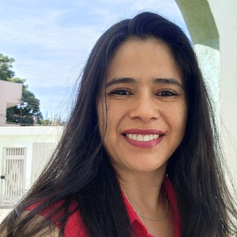

Sobre Mim

Olá! Eu sou a Dora Yovana Barrios Leal e estou em transição de carreira para a área de ciência de dados.
Ao longo de mais de 15 anos de experiência em pesquisa e análise estatística, desenvolvi habilidades para extrair informações valiosas de
diferentes tipos de dados e responder a perguntas complexas. Minha especialização em análise de dados me permite gerar insights significativos
para apoiar decisões estratégicas. Além disso, tenho experiência na elaboração de artigos científicos e no acompanhamento de projetos,
o que fortaleceu minhas habilidades analíticas e de comunicação. Estou empolgada com a oportunidade de aplicar esse conhecimento
para contribuir na criação de soluções inovadoras e ajudar equipes a enfrentar desafios baseados em dados.